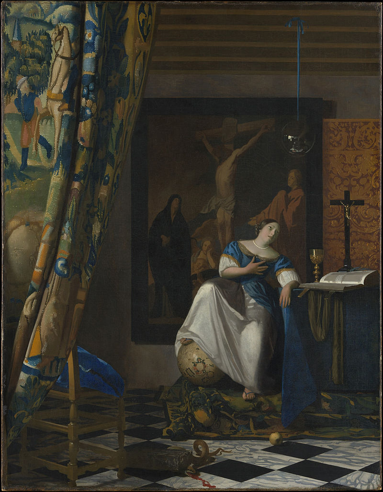

Welcome to Wikipedia,
the free encyclopaecia that anyone can edit. 6,037,034 article in English
From today's featured article'
 The Sonestown Covered Bridge is a Burr arch truss covered bridge over Muncy Creek in Davidson Township, Sullivan County, in the U.S. state of Pennsylvania. Built c. 1850, the bridge is 110 feet (34 m) long, and was placed on the National Register of Historic Places (NRHP) in 1980. The bridge is named for the nearby unincorporated village of Sonestown; it was built to provide access to a gristmill, which operated until the early 20th century. The bridge construction is cruder than the other two surviving covered bridges in Sullivan County, with each Burr arch formed from six straight beams set at angles instead of a smooth curve. Despite being repaired or restored several times from 1969, as of 2016 the bridge was deemed "basically intolerable requiring high priority of corrective action" on the National Bridge Inventory. It is the shortest covered bridge in the county and as of 2015 had average daily traffic of 50 vehicles. (Full article...)
The Sonestown Covered Bridge is a Burr arch truss covered bridge over Muncy Creek in Davidson Township, Sullivan County, in the U.S. state of Pennsylvania. Built c. 1850, the bridge is 110 feet (34 m) long, and was placed on the National Register of Historic Places (NRHP) in 1980. The bridge is named for the nearby unincorporated village of Sonestown; it was built to provide access to a gristmill, which operated until the early 20th century. The bridge construction is cruder than the other two surviving covered bridges in Sullivan County, with each Burr arch formed from six straight beams set at angles instead of a smooth curve. Despite being repaired or restored several times from 1969, as of 2016 the bridge was deemed "basically intolerable requiring high priority of corrective action" on the National Bridge Inventory. It is the shortest covered bridge in the county and as of 2015 had average daily traffic of 50 vehicles. (Full article...)
Recently featured: Arnold BaxWilliam F. RaynoldsBridgeport, Connecticut, Centennial half dollar ArchiveBy emailMore featured articles
In the news
Coronavirus pandemic
Edwin Catmull (pictured) and Pat Hanrahan are awarded the Turing Award for their work on computer-generated imagery. The World Health Organization recognises the coronavirus outbreak as a pandemic. Recent deaths: Alfred WordenThái ThanhPilar LunaRoy HuddChris ReedGenesis P-Orridge Other recent eventsNominate an article
Today's featured picture
 The Allegory of Faith is an oil-on-canvas painting by Dutch Golden Age artist Johannes Vermeer. Painted in the early 1670s, it is now in the collection of the Metropolitan Museum of Art in New York City, where it has been since 1931. The painting depicts a finely dressed woman, representing the Catholic faith, sitting on a platform, with her right foot on a terrestrial globe and her right hand on her heart. She looks up, adoringly, at a glass sphere hung from the ceiling by a blue ribbon. Her left arm rests on the edge of a table which holds a golden chalice, a large book, and a crucifix. Resting on the book is a crown of thorns. At the bottom of the picture is an apple, and near that a snake squashed by a cornerstone. In the dim background hangs a large painting of the crucifixion of Jesus. Much of the symbolism, including the colour of the woman's clothing, her hand gestures, and the presence of the crushed snake and the apple, may have come from Cesare Ripa's emblem book Iconologia. Painting credit: Johannes Vermeer Recently featured: Alexei LeonovCliff flycatcherJames Madison ArchiveMore featured pictures